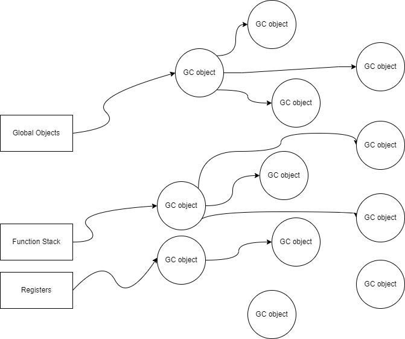

前言
去年一年就出了一篇博客，整体上来说还是太忙了，又是赶项目又是忙出书的事情，趁着农历还没新年，忙里偷闲整一篇新的XD。本次想讨论的内容是分代GC（garbage collection，意为垃圾回收机制），关于GC相关的文章，之前在Lua解释器构建系列中已经出过一篇，不过那个是增进式GC（感兴趣的读者可以点击这个链接：构建Lua解释器Part2：Garbage Collection基础架构），本文想要讨论的则是分代GC。
虽然本文写作的动机是在笔者阅读完Lua 5.4的GC源码之后，出于巩固知识的目的写的，但是笔者还是希望从更高的层次去讨论GC算法本身，因此会略去诸多Lua虚拟机相关的实现细节。本文将从GC的作用开始论述，介绍GC机制中常见的组成部件。首先通过简单的标记清除算法来引入GC的概念，然后逐步引入分步执行GC的概念和算法，最后以Lua 5.4所使用的分代GC算法为例，介绍工业级语言虚拟机是如何进行分代GC运作的。
为了方便论述，本文不会完全遵循源码中的所有细节，旨在更好的解释分代GC这种机制，希望能让读者对分代GC有个比较深刻的理解，最后由于本人水平有限，如有不正确的地方，欢迎大家批评指正，笔者在此感激不尽。读者也可以加入笔者创建的Q群，QQ号为：185017593。
GC简介
GC是Garbage Collection的缩写，意为垃圾回收机制，它通常被带虚拟机的语言实现。大家在使用不带GC的语言时（比如C和C++），往往需要自己管理堆内存，业务复杂时，总难免会出现开辟出来的内存没有被释放的情况，进而造成内存泄漏。使用实现了垃圾回收机制的语言，往往可以极大降低内存管理的难度，相对应地降低了心智负担，进而增加开发者的开发效率。
开辟出来的堆内存，不再被其他方法访问和使用时，它就成为了“垃圾”。带GC机制的语言，往往通过虚拟机来托管，在合适的时机自动“回收”（也就是释放）这些“垃圾”，接下来先来看看要实现GC机制，需要有哪些基本的组成部件。
GC的基本元素
从程序员的视角来看，内存主要分为栈内存、全局内存和堆内存，图1展示了Linux操作系统的内存模型。栈内存在调用函数时自动开辟，一般存放局部变量，函数调用结束后清空，通常不需要程序员自己管理。全局内存一般存放的是一开始定义好的全局变量或静态变量，它在进程启动时就存在，进程结束时才销毁，因此也不需要程序员自己管理。而堆内存往往是通过new关键字，或者通过调用malloc函数获得的动态内存（一般位于heap或者mmap空间中），这部分内存需要在使用完之后动态地释放掉。
 图1
图1
带GC机制的虚拟机要管理这些动态开辟的内存，就需要一些统一的概念对其进行管理。首先，所有被动态开辟出来的内存空间，在本文中将被视为一种对象，这里将其命名为GC object（事实上一些语言也是这样命名这些对象的）。GC object是个抽象的概念，它是所有需要被GC机制托管的对象的统称，在面向对象的语言中，可以将其视为所有需要动态开辟和回收对象的基类。在一个最简单的GC机制中，GC object的结构可以如下所示：
struct GCObject {
struct GCObject* next;
type typename;
} 所有的GC object都要能被虚拟机找到，因此它们全部放入一个全局的链表，是一种常见的方法。struct GCObject结构是一个简化过的结构，目前它只有一个指向下一个GCObject的next指针，以及一个指命该对象是什么类型的typeanme字段。
在GC机制中，所有被创建出来的GC object，均需要放入一个统一管理的数据结构中，本文采用了链表结构，并且将其命名为allgc链表，图2展示新增GC object的插入流程。
图2
将所有的GC object放在一个链表里的目的是在合适的时机，找到所有的GC object，进而进行回收操作，这是一切的基础。
虚拟机的一些基础概念
尽管GC机制不是编程语言所独有的，但是许多语言确实实现了虚拟机，而要深刻理解GC机制，理解虚拟机是必要的。本节将通过介绍Lua虚拟机的一些基础概念来给读者构建一些具象的理解。
虚拟机实际上是一个虚拟的处理器，或者某种程度上说，是个虚拟的计算机系统。它出现的目标是隐藏真实硬件背后的细节，并运行目标语言经过编译后的字节码。以Lua为例，Lua脚本经过编译之后会得到Lua字节码，而Lua虚拟机则会消费这些字节码。运行Lua虚拟机的程序同时包含了一个内置编译器，因此可以边加载Lua脚本边编译然后再运行，因此运行Lua脚本的程序也被称为Lua解释器（不需要要预先编译，直接加载并运行）。当然大家也可以通过luac这个Lua编译器预先将Lua脚本编译成字节码，再传入Lua虚拟机去运行。
图3展示了一个“print(‘hello world’)”程序加载编译后，在内存中的结构图。脚本被编译后的字节码则保存在图中的Proto.code结构里，而Proto.k则是常量表，它包含了函数名“print”和参数“hello world”。Proto.code里面的字节码只有Lua虚拟机认得，别的程序都不认得，每一种语言的虚拟机，都有自己的字节码指令结构。图3中的所有结构，均是通过malloc函数开辟出来的，基本上都在堆内存里。“print(‘hello world’)”编译后的指令存在于一个匿名函数中，这个匿名函数就是图3中的LClosure实例，它包含了前文提到的Proto结构，stack上的其他位置，则是这个匿名函数的栈空间。
图3 摘自《Lua解释器构建：从虚拟机到编译器》一书
那么Proto.code中的字节码是怎样被消费的呢？在Lua脚本中一个函数对应一个Proto结构，Lua脚本本身就是一个匿名函数，在执行函数调用时，虚拟机的运作方式可以通过如下伪代码来展示。其中的do something逻辑，就是虚拟机指令的具体实现逻辑，它会访问图3中各个位置的内存变量。在Lua的实现中，这段代码是通过C语言实现的。
func VM_execute(Proto p)
while (p.code[pc] is exist) {
Instruction i = p.code[pc];
switch(get_opcode(i)) {
case OP_GETTABUP: { do something }
case OP_LOADK: { do something }
case OP_CALL: { do something }
case OP_XXX: { do something }
...
}
pc ++;
}
end 在本例中，在虚拟机中运行完成编译后的“print(‘hello world’)”，就是对该编译结果执行上述的VM_execute的逻辑。首先要将print函数和hello world字符串入栈（也就是执行图3中的OP_GETTABUP和OP_LOADK指令）得到图4的结果，然后再去调用这个print函数（也就是执行OP_CALL指令，该指令的参数指明，要调用的函数位于LClosure上第0个位置的函数，有2-1=1个参数，返回1-1=0个返回值），于是屏幕就输出了“hello world”。这就是打印“hello world”的程序在Lua虚拟机中执行过程中的内存变化情况，实际指令执行的逻辑还是在虚拟机里的VM_execute中。
图4
Lua虚拟机的实现逻辑用C实现的，现在通过图5来展现虚拟机结构和Lua虚拟机执行指令代码的关系。
图5
读者通过图5应该能发现，虚拟机中的栈可能和进程运行时的栈不是同一个概念，同样虚拟机中的指令和CPU的指令也没有直接的关联，虚拟机的寄存器也可以通过使用虚拟机上的栈空间来模拟，或者重新malloc一块内存来代表虚拟机的寄存器，它们也并非真实的CPU的寄存器，后文提到的栈空间、全局空间和寄存器一律指代虚拟机中实现的部分。尽管本节介绍的是Lua的虚拟机，其他语言的虚拟机尽管设计和实现上有很大差别，但是一些概念是相通的，本节重点想说明，后文提到的栈空间、全局空间和寄存器一律指虚拟机的栈空间、全局空间和寄存器空间。
一个简单的GC算法：标记清除算法
本节衔接上一节，通过一个简单的标记清除算法，希望能给读者构建一个对垃圾回收机制的一个直观的理解。实际上GC机制并不复杂，复杂的是与各种语言的特性结合之后，进行了特殊的处理，从而导致整个机制非常的复杂。
前文已经提过，GC object指代所有需要被GC机制回收对象的统称。对象现在有了，那么垃圾回收何时触发？从哪里开始？
一般来说，虚拟机在创建GC object的时候，除了会将它们塞入类似allgc那样的链表以外，还会将GC object的内存大小累加起来，本文将其记为totalbytes。GC的开销一般很大，因此不可能时时刻刻进行，所以需要在合适的时机触发GC。那么如何触发GC呢？方法其实很多，本节为了方便论述，将采用最简单的一种。
可以设置一个阈值，当totalbytes达到这个阈值时则触发GC，这个阈值可以根据实际需要动态调整，比如每进行一轮GC时，如果GC后的totalbytes比上一轮GC结束后的还大，可以让阈值乘以1.5倍，如果不大于上一轮GC后的totalbytes则保持不变，如此等等，不一而足，总之读者现在只要知道GC是不能时时刻刻发生的，它有一个触发时机即可，后文会介绍Lua5.4的GC的触发机制。
接下来要回答的另一个问题则是GC从哪里开始？一般而言GC object会被分为可达和不可达两种，所谓的可达对象则是正在被程序使用的对象，或者被这些对象直接或者间接引用的对象。不可达对象则是那些未被使用，且未被引用的对象，这些都是GC机制回收的目标。正在或者即有可能被使用的对象，开始于栈空间、全局内存和寄存器，从这些地方开始就能顺藤摸瓜找到所有被引用到的对象。如图6所示，Global Objects区域为虚拟机用来存储全局对象的内存空间，Function Stack为虚拟机中被调用函数的栈空间，而Registers则是虚拟机中用来模拟寄存器作用的内存空间（虚拟机本质是虚拟出来的计算机系统，很多语言会划分出虚拟的栈空间、虚拟全局空间和寄存器用以支持虚拟机的运行）。这些空间是GC开始的起点，图6展示了一些引用关系。
图6
本节介绍的是最基本的标记和清除算法，还是以图6的情况为例，假设此时满足了触发GC的条件，那么虚拟机会从Global Objects空间、Function Stack空间和Registers空间开始标记，得到图7的结果，图中被蓝色标记的是可达对象，被虚线框起来的则是不可达对象，也就是要被虚拟机回收的“垃圾”。GC结束后，未被标记的不可达对象将被清除。
图7
现在就完成了最简单的标记清除算法的讨论了，理解起来非常简单直观，但是致命伤也很重，原因是这种GC算法虽然简单，但是不可中断，一次必须完成所有对象的标记和清除，一旦中途中断，GC object的引用关系可能发生变化，上一轮GC遍历引用并标记的进度，在下一轮GC中无法使用，因此无法被中断，由于无法中断GC过程，因此当GC object数量足够多时，GC一旦触发就会导致程序运行非常卡顿，进而影响用户体验。现在迫切需要一种能够记录GC进度的机制，否则分步进行GC处理将无从谈起。
三色标记法
为了解决上一节中提到的问题，本节将来介绍三色标记法，这种方法可以看作是保存GC进度的机制，同时能够很好地解决GC object引用关系发生变化的情况。
三色标记法将GC object分为了白色、灰色和黑色三种状态。白色的对象一般是新创建的对象，当满足一轮GC触发条件以后，虚拟机将从其栈空间、全局空间和寄存器中的GC object开始标记，这里的标记就是将白色的对象标记为灰色，每标记一个白色的GC object，就将其累加到一个变量中（记为work），当work的值达到一定程度时，GC处理退出，在创建若干个GC object之后再次触发GC操作。由于每次执行完GC操作，不一定是像上一节提到的GC机制一样全量执行完，因此将该不完全的GC操作称之为GC step。被标记的GC object会从白色变为灰色，并且放入专门存放灰色GC object的链表中（记为graylist，最开始包含的对象就是栈空间、全局空间和寄存器里的GC object）。GC处理是分阶段的，每个阶段执行不同的逻辑，本文将GC阶段分为GCpause（暂停）、GCpropagate（传播）和GCsweep（清理）几个阶段，它们的状态关系图如图8所示，并且这个状态机逻辑完全是在GC step里执行。当新一轮GC开始之后，GC就进入到GCpropagate阶段，就如紧挨着图8后的伪代码所示：
图8
func GCstep() {
switch(g->gcstate) {
...
case GCpropagate: {
memsize work = 0;
GCObject* gcobj = g->graylist.pop();
while (gcobj) {
mark2black(gcobj);
work += gcobj->memsize();
foreach ref in gcobj->refs do {
mark2gray(ref);
g->graylist.insert(ref);
}
if (work >= BREAK_NUM) {
break;
}
gcobj = g->graylist.pop();
}
if (g->graylist.length() <= 0) {
g->currentwhite = otherwhite();
g->gcstate = GCsweep;
g->sweepgco = &g->allgc;
}
}
...
}
...
} 逻辑比较直观，就是将graylist中的对象取出来标记为黑色，然后将其引用的对象标记为灰色并塞入graylist中。通常graylist并不会一次就遍历完，而是将标记过的graylist中的GC object的大小累计起来，在累加值大于阈值BREAK_NUM时退出GC处理，一次GC step就执行完了。这个过程会持续一段时间，graylist也会从不断增大再到减少最后变空的过程，当变为空时，GC就进入下一个阶段了。
graylist中包含的是所有被标记为灰色的GC object，它为空意味着虚拟机中的GC object要么是黑色，要么是白色。此时可以进入清理阶段了，在GC阶段设置为GCsweep的同时，也将后续新增的GC object的白色设置成otherwhite，这样做的目的是和当前标记为白色的GC object区分开来，在清除阶段只删除本轮GC标记为白色的对象，本质就是清理阶段新增的GC object留到下一轮GC再处理，也就是说白色是根据GC轮次乒乓交换的。
到了清理阶段，本质就是遍历allgc链表，将白色的GC object清除，并将黑色GC object标记为下一轮GC要清理的白色。当然清空也不是一次清理完，而是分步执行，然后进入GC暂停阶段。
func GCstep() {
switch(g->gcstate) {
...
case GCSweep: {
memsize work = 0;
while (*g->sweepgco) {
work += gco->memsize();
if (iswhite(gco)) {
g->allgc.remove(gco);
g->sweepgco = &gco->next;
delete gco;
} if (isblack(gco)) {
g->sweepgco = &gco->next;
mark2otherwhite(gco);
} else {
g->sweepgco = &gco->next;
}
if (work >= BREAK_NUM) {
break;
}
}
if (!(*g->sweepgco)) {
g->state = GCpause;
}
}
...
}
...
}接下来看一下GC step的触发状态机，如图9所示。GC step的触发时机就是当新增GC object的内存总量大于一个阈值时触发。读者应该可以发现三色标记法其实质就是一种增进式的GC算法，它拆分了GC的进度，并且能够做到保存进度，它的优点是能够将GC处理分步进行，不用将所有的处理堆在一起，当然坏处也比较明显，就是graylist不清空就绝不开始回收，有时候可能会出现内存经历一个长时间的增长后才开始回收，使得程序员不得不在特定时间段内进行fullgc。后面将来看看分代GC算法。
图9
分代GC基本概念：CLR中的的GC算法
C#语言的虚拟机CLR采用了分代GC机制[1]，本文将针对这种机制进行论述。前面章节介绍了三色标记法，同时引入了增进式GC的概念和算法，并且对其优势和劣势进行了讨论。增进式GC是可以中断的，从而避免了因为一次全量GC（fullgc）带来的性能开销，但也带来了内存峰值可能不太好控制的问题。而分代GC又与增进式GC不同，它每次执行GC处理是不能中途退出的，但是也前文讨论过的简单标记清除算法不同，它的GC是分代处理，每次处理都可以执行清除操作，从而避免了简单标记清除算法中的过多的CPU开销，以及增进式GC中不进入sweep阶段绝不清除GC object的问题。
CLR的GC object是在托管堆中管理的，这里的托管堆本质还是堆内存空间，CLR的托管堆是逻辑上一块连续的内存空间，它有一个NextObjPtr指针指向新的GC object的起始地址，假设现在有A、B、C三个对象已被开辟，对象D正在被开辟，那么它们在托管堆里的情况则如图10所示。
图10
通过图10可知，在CLR中的每个GC object都有自己的内存大小，不同类型的GC object占用的内存大小是不一样的，每个GC object中都会包含一些头部信息，比如指明邻居地址的信息。NextObjPtr右侧是未被使用的内存空间，左侧是已经分配好的空间，新的GC object的地址就是NextObjPtr。尽管CLR中未必有allgc链表，不过为了更好的论述，结合本文的定义，笔者还是引入allgc链表变量，用来索引所有创建出来的GC object。如图11所示，所有创建的GC object都被塞入allgc链表中。
图11
前文也提过GC object是从虚拟机的栈空间、全局空间和寄存器开始标记可达对象，在分代GC中一样需要标记这些对象，图12展示了GC object在这种模式下的引用关系。
图12
新开辟的GC object会不断从NextObjPtr右侧取空间，当已开辟的内存总大小达到一个阈值时就要开始GC了。开始GC后，虚拟机内只留下GC线程可以工作，其他所有的线程都要暂停，避免影响到GC object的引用关系。第一步是从虚拟机的栈空间、全局空间和寄存器开始标记，比如图13展示的就是从虚拟机的栈空间开始标记的情况。被标记的GC object是可达对象，未被标记的F和G则是不可达对象，需要释放它们，在图13的中只需要将NextObjPtr指针移到原F的位置即可，最后的结果如图14所示。
图13
图14
图13和图14举的例子比较理想，如果被清除的GC object不是紧挨着NextObjPtr的连续内存块的话，那会发生什么呢？答案是会将右侧的可达对象逐个向左移动，并更新引用自己的指针的地址，这种方法被称为压缩，如图15所示。
图15
一切看起来很美好，不过机敏的读者应该很快能发现问题，这不就是简单的标记清除算法么？就是加多了一个压缩处理，虽然压缩后内存更紧凑，更符合局部性，更利于CPU缓存命中，但是还是没有改变需要全量GC带来开销过大的问题。所以如果分代进行GC，那么情况会好很多。分代GC为何有效主要基于以下几点：
- 对象越新，生存周期越短。
- 对象越老，生存周期越长。
- 回收一部分速度远快于回收所有部分。
CLR将GC分为3代，分别是第0代、第1代和第2代。为了方便理解，读者可以将第0代视为新生代、第1代视为中年代、第2代视为老年代。有许多GC object随着函数的调用开辟，随着调用结束就没有被其他地方引用到，只是在栈空间里存活很短一段时间，因此及时清理它们可以有效地回收内存。新创建的GC object基本上是先进入新生代，事实上每一代的内存总量均会被统计，当内存超过一个阈值时，就触发对应代的GC，现在假设新生代的GC阈值为N，中年代为M，老年代为O。阈值不是固定不变的，它们会根据内存使用的实际情况动态调整。
现在通过一个例子来阐述CLR分代GC的流程。如图16所示，进程启动后程序先创建了三个对象A、B、C。当创建对象D时，第0代内存总量超过阈值N，此时启动第0代GC。第0代GC完成之后，存活下来的GC object会被划入第1代中。
 图16
图16
现在假设新创建GC object E、F、G、H，并触发新一次第0代GC，其中只有H存活，H被并入第1代，假设此时第1代的内存总量超过了阈值M，因此需要触发第1代GC，如图17所示：
 图17
图17
同样的，第2代的内存总量超过阈值O时，才会触发新的GC。以上是一个比较简单的情况，真实的运行环境往往“三代同堂”如图18所示。
图18
本节讨论了CLR基于托管堆的分代GC机制，本质上每次GC还是会暂停虚拟机其他操作，只进行GC操作。与增进式GC不同的是，分代GC几乎每次GC都有机会及时清除掉不可达的GC object，因此既不需要像简单标记清除算法那样进行全量GC，又不需要像增进式GC那样，在graylist清空之前不能清除不可达对象，从而导致内存峰值不好控制的问题。由此可见，分代GC是一种比较理想的GC机制了。
本节还有未讨论的问题，比如触发每一代GC的内存阈值参数（前文提到的N、M、O）的值怎么定，怎样进行动态变化？另一个问题则是，从前一代移到更老一代的GC object往往是被标记过的，那么触发更老一代GC的时候，怎么知道哪些对象是可达的，哪些不可达？其中一个解决办法就是将NextObjPtr左边所有的GC object全部清除标记位，然后从虚拟机的栈空间、全局空间和寄存器开始重新标记再清除和压缩。这样并不能省去标记的开销，但是还是能省去很多清理和压缩的开销。
本节的主要内容来自于《CLR via C#》，并且新增了一些内容。文中提到的GC机制也是截止到该书出版之前的CLR版本，并不能代表最新的CLR版本。
Lua 5.4的分代GC算法
本节要介绍的是Lua 5.4的分代GC，与CLR的托管堆管理方式不同，Lua 5.4清空不可达对象是直接free掉内存，而不进行任何压缩处理。
Lua 5.4的GC分代如图19所示，一共分为reallyold、old1、survival和new几代。由于这些GC object并非放置在内存连续的托管堆里，因此也是概念上的划分，实际上Lua 5.4的源码中是通过g->reallyold、g->old1、g->survival和g->allgc指针来指明代际分布的。而且这些指针也是直接指向某个具体的GC object。
有了上一节的基础，读者应该可以很容易联想到Lua 5.4的具体GC过程，无非就是新创建的GC object放入新生态new空间，然后GC处理之后存活的部分转移到survival中，而survival中存活的部分转移到old1中，old1中存活的对象转移到reallyold中。整篇文章似乎到此为止，不需要额外增加新的内容，不过Lua 5.4结合自己的语言特性，做了很多特殊处理，后面将通过一些精心挑选的例子来阐述这些特殊处理，帮助读者更好地理解Lua 5.4的分代GC。
图19
在Lua 5.4中，处于不同代的GC object一样有自己的颜色状态，还有GC状态。颜色状态包括黑色、灰色和白色，GC状态包括：
- G_NEW：新创建的GC object会被塞入allgc链表中，标记为白色，并且GC状态设置为G_NEW。
- G_SURVIVAL：对新生代进行GC之后，未被清除的存活对象，会被设置为白色并从G_NEW状态设置为G_SURVIVAL状态。
- G_OLD0、G_TOUCHED1、G_TOUCHED2：这几个状态和屏障相关，内容比较复杂将在后文进行讨论。
- G_OLD1：新生代GC结束后，状态为G_SURVIVAL的GC object继续存活的话，将被设置成G_OLD1状态。
- G_OLD：真正的老年代GC object将会设置成这个状态。
GC object的状态并不影响其处于哪一代中，之所以需要给GC object多加一个GC状态，主要是为了配合Lua 5.4的一些特性和优化，这个会在后面的内容中进行说明。Lua 5.4的分代GC主要分为新生代GC和老年代GC，新生代GC主要是针对new和survival这两代进行GC处理，老年代GC本质就是进行一次全量GC。Lua 5.4的GC触发机制如图20所示。图中的totalbytes是当前虚拟机内存总量，会随着新增GC object和GC的结束而变化。estimate是上一轮GC结束后，剩余的虚拟机内存统计，每次GC结束时更新。atomic是当前GC过程中，扫描的内存总量。lastatomic则是上一次GC处理结束前，atomic设置到lastatomic上，当然要设置lastatomic是有条件的，状态切换条件已经在图20中展示出来了。youngcollection是新生代GC，而fullgen和stepgenfull所做的GC处理是差不多的，都是在做全量GC，这里分开主要是为了更好地描述状态切换的条件。
图20
现在先来看新生代GC的处理流程。当一个Lua虚拟机被创建时，其初始状态如图21所示，一开始就有一些GC object处于reallyold这一代中，通常是Lua的main thread和全局注册表，Lua的main thread包含了Lua VM的虚拟栈空间和寄存器，Lua注册表包含了Lua VM的全局空间，GC时他们就是根集，是一切GC操作的起点。
图21
如图22所示，此时新增3个GC object，O3、O4和O5，刚好到了触发young collection的条件，并且只有O4是可达的。O2在本例当中是一个Lua Table实例，此时它是黑色的，前面三色标记的GC算法已经提到过，黑色的对象是不能直接引用白色的对象的，这是因为已经被标记为黑色的GC object在GC处理阶段不会再对它进行扫描，从而使其关联的对象不能被标记，最后会被当成不可达对象而被清除。为了解决这个问题，Lua采用了设置屏障的策略，一共有两种，一种是向后设置屏障，一种则是向前设置屏障。
所谓的向前设置屏障指的是，如果被关联的对象是黑色，那么新创建的白色对象直接设置为灰色。所谓向后设置屏障，就是直接将被关联对象直接从黑色设置成灰色，并且放入一个叫grayagain的链表中，这个grayagain链表会在GC处理阶段被遍历，其中的GC object会被重新标记和扫描。
Lua Table实例的key和value的设置是很频繁的，很多key和value刚被设置到一个Lua Table实例中，后面可能就会被替换掉，在GC阶段它们仍然是不可达对象，因此将Lua Table向后设置屏障是效率比较高的方法，如果将Lua Table实例关联的GC object向前设置屏障，那么就会多出很多实用频率很低的对象被标记，从而没有及时被清理掉，这是VM设计者所不愿意看到的。
在Lua 5.4中，这些会被向后设置屏障的GC object会被设置成G_TOUCHED状态，在GC阶段，VM会根据这个状态对GC object做特殊处理，这个将在后文慢慢解释。
回到图22中的例子，在引用关系确定，且young collection已经触发的情况下，此时会将O4的状态改成G_SURVIVAL并且标记为黑色，其余两个GC object O3和O5会被清空。可以参照一下图19，“new”空间的GC object已经完全被处理完毕。并且原来的new空间变成了survival空间，其本质还是在新生代。原来被标记成黑色的O4此时会被重新设置成白色，这样做的目的是尽可能在下一次GC时清理新生代的GC object。与此同时，O2的状态从G_TOUCHED1变为G_TOUCHED2，且它也被重新放入grayagain链表中。GC机制会在不可达对象被清理之后，将G_TOUCHED1状态的GC object放入grayagain链表，并将其设置成G_TOUCHED2状态。
图22
在经过一段时间的暂停之后，由于新增了O6和O7对象，刚好能够触发新一轮young collection，那么此时GC处理变化则如图23所示。新增的O7被O2引用，因此O7可达，而O2触发向后设置屏障的逻辑，颜色设置成灰色，状态改成G_TOUCHED1，这说明G_TOUCHED1和G_TOUCHED2状态会根据Lua Table实例是否关联到新的白色对象而相互切换。经过新生代GC处理之后，new变为survival，survival变为old1。
图23
接着前面的情景，新增O8、O9和O10，触发了新的young collection，此时O4引用了O9，而O9又引用了O8。O4是向前设置屏障的GC object类型（比如Lua的Proto结构），因此O9被设置成了G_OLD0状态，并且被设置成了灰色。为什么要被设置成G_OLD0而不是G_OLD呢？这个问题留在稍后进行解释。
现在来观察图24的情况。首先VM会将old1中的对象从G_OLD1设置为G_OLD状态，并且将其从黑色设置为灰色，设置为灰色的对象会被放入gray链表，并且被标记和扫描（其引用到的所有对象也会进行这个操作，回顾一下三色标记算法）。为什么需要old1？还要将old1中的GC object重新设置为灰色，并放入gray链表中？这个问题会随着流程的推进被解释。本次GC结束后，O8会被设置成G_SURVIVAL状态，并且设置成白色，注意O9从G_OLD0变成了G_OLD1，并且它被设置成了黑色。此时奇妙的问题来了，不是说黑色对象不能直接关联白色对象吗？O8在下次GC时被清理掉怎么办？
图24
观察图25，此时新增O10触发新的young collection，GC处理第一阶段就是将G_OLD1状态的GC object设置成G_OLD，并且将其设置为灰色，回顾一下上一次GC处理，黑色的O9引用了白色的O8，这会产生严重的问题，而前面引出的为什么需要old1代，并且将old1代中的GC object设置成灰色？现在就有了答案，就是为了处理上一次GC结束后，黑色对象直接引用白色对象的情况，这样继续下去，所有可达的GC object都会被标记。此时另一个问题也可以被回答了，为什么向前设置屏障的GC object需要被设置成G_OLD0而不是G_OLD？因为如果被设置成G_OLD，那么在本轮GC中就没有机会被设置成灰色了，因为VM在GC开始前，只对G_OLD1状态的GC object这样处理。
图25
以上就是对young collection的讨论，而fullgen和stepgenfull的处理也很简单，就是将allgc链表中的所有对象设置成白色，并且从根集开始进行标记和扫描，然后再清理不可达对象，这个过程不可中断。
总结
本文较为深入地探讨了分代GC的机制，从介绍GC的基本要素开始，先后介绍了简单标记和清除算法，然后介绍了三色标记法，进而引出增进式GC算法。再探讨了CLR基于托管堆的分代GC机制，最后介绍了Lua 5.4的分代GC机制，并对其中的一些细节进行了探讨。总的来说分代GC相比于简单标记和清除算法，每次只是清理一部分。相对于增进式GC，它会更加及时地处理不可达的对象，内存峰值在理论上相对可控。分代GC也是众多语言的VM中被广泛使用的算法，研究和掌握它具有重要意义。
最后对Lua解释器的设计和实现感兴趣的读者，可以关注一下我写的这本书《Lua解释器构建：从虚拟机到编译器》。
Reference
[1] 《CLR via C#》 【第21章 托管堆和垃圾回收】